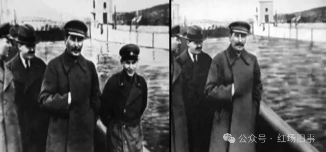
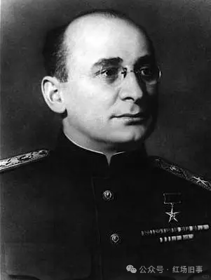
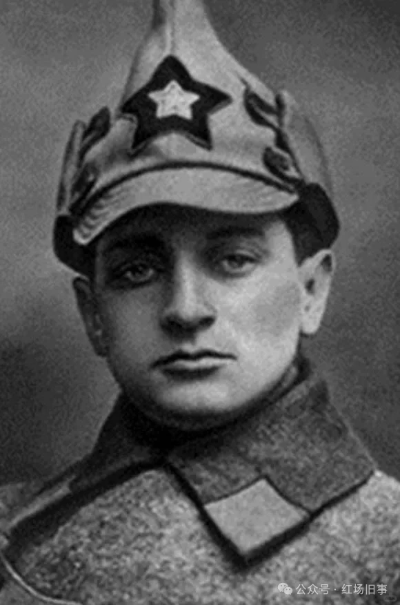
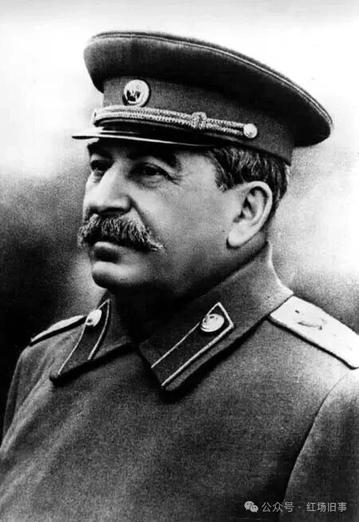

大清洗1937—恐惧笼罩的苏联，谁是这场浩劫的赢家？
文字与图片版权归各自权利人所有。 查看公众号原文 ↗
一个发明了“斜地板”房间，只为方便血迹流走；另一个在15年后亲手枪毙了前任，最终自己也倒在同样的位置上。大清洗不是一个人的疯狂，而是一架由集权逻辑驱动的绞肉机——叶若夫是那把刀，贝利亚是换刀的手，而斯大林，从来都是握刀的人。
一、深夜的敲门声1937年的苏联，每一个夜晚都可能是最后一个。莫斯科的公寓楼里，人们学会了一听见楼道里的脚步声就屏住呼吸。深夜两点到四点，内务人民委员会的黑色轿车会悄然停在某个单元门口。随后是急促的敲门声、短促的尖叫，以及从此消失的邻居。没有人知道谁是下一个。这一年，被后世称为“大清洗”的恐怖浪潮席卷了整个苏联。老布尔什维克、军队高层、知识分子、科学家、农民……成片成片地从生活中被“摘除”。然而，这场洪水的堤坝，是由两个完全不同的男人相继掌控的。一个叫尼古拉·叶若夫，大清洗的“刽子手”；另一个叫拉夫连季·贝利亚，叶若夫的继任者、清算者，以及——15年后同样被秘密处决的“二号人物”。要理解1937，就必须理解这两个人。一个代表恐怖的巅峰，一个代表恐怖的制度化。
二、叶若夫：站在血泊中的侏儒身高仅一米五一的叶若夫，在历史照片中总是紧挨斯大林站立。苏联报刊曾肉麻地称他为“斯大林的人民委员”，而历史给他的标签则冷酷得多——“血洗红军者”。

叶若夫1936年至1938年，叶若夫执掌内务人民委员会（NKVD）。正是在他任内，大清洗从“清理反对派”升级为席卷全社会的大恐怖。图哈切夫斯基等五位元帅中的三位被处决；全军约3.5万名军官被捕，其中约1.5万人被枪决；十七大代表中的半数、中央委员中的七成，消失在刑讯室里。叶若夫甚至发明了一种审讯室：地板是倾斜的，中央设有地漏——这样冲洗血迹时水流会自动流向排水口。这个细节足以说明：在叶若夫眼中，杀人已经不再是政治手段，而成了一项需要追求“效率”的技术活。当有人质疑镇压范围过宽时，叶若夫的回答是：“多枪毙百八十个人没什么了不起的。”当被问及七八十岁的前富农该如何处置，他的判决更直接：“只要还能站起来就枪毙。”然而，恐怖一旦被发动，就会反噬发动者。1938年，斯大林决定“收场”。叶若夫被任命为水运人民委员——明升暗贬，随后被软禁。他的最后时光极具讽刺意味：他本人被关进一间由自己设计的囚室，地板依然倾斜，血迹依然会顺畅流走。1939年，叶若夫被贝利亚的人从后脑开枪击毙，终年44岁。
三、贝利亚：清洗者亦被清洗如果叶若夫是恐怖之“火”，贝利亚就是恐怖之“冰”。

拉夫连季·贝利亚1899年生于格鲁吉亚农民家庭，贝利亚早年加入契卡，30年代初因一次“舍身救驾”——在斯大林度假遇袭时以身掩护——赢得领袖终身信任。1938年，斯大林将贝利亚调入莫斯科，任务明确：收拾叶若夫的烂摊子，恢复内务部的“秩序”。贝利亚上任当天就办了一件大事：逮捕叶若夫派系数十名高官，以“整肃滥权”之名血洗了清洗者。与此同时，他释放了约25万被叶若夫关押的人，其中就有后来苏联核武器的重要设计师图波列夫——此人被从死刑架上拉回，在监狱设计局里继续画图纸。然而，贝利亚从未停止镇压。他接手内务部的第一年，仍有20余万人被逮捕。他扩展了“特别会议”权限——这个机构可在无律师、无证人、无当庭质证的情况下判处刑罚；他签署了斯大林批准的刑讯指令；他更是卡廷惨案的直接发起人和执行者，1940年春，两万余名波兰军官在他的命令下被枪决，埋入森林。贝利亚从不嗜血，他只是高效。二战期间，他是国防委员会成员，负责情报、军工、少数民族强制迁徙。车臣、印古什、克里米亚鞑靼人——数十万人被他用火车运往中亚，沿途死亡不计其数。他也主持苏联核计划，1949年原子弹爆炸成功，他用组织力和冷酷，把苏联推入核俱乐部。1953年3月5日，斯大林去世。贝利亚以为自己等到了时代。他立即释放120万囚犯，叫停“医生案”，为列宁格勒案件平反，提议两德统一、与南斯拉夫和解，甚至主张党的机关不应干涉经济事务。但改革者总是危险的。1953年6月26日，赫鲁晓夫联合马林科夫、朱可夫，在克里姆林宫会议上突然发难。贝利亚被当场逮捕，罪名是“背叛祖国、妄图复辟资本主义”。12月23日，秘密处决。他的母亲、岳母、妻子、妹妹和儿子共20人，被流放。
四、为什么会发生？三个维度的答案1. 体制的“内爆”
1920年代末的超高速工业化、强制集体化，使苏联社会积累了巨大矛盾。基辅筑垒地域耗资1300万卢布，建成257座永备工事，其中只有5座具备作战能力——其余要么没有机枪射界，要么埋在森林里成了摆设。贪污、渎职、低效，与宏伟口号形成刺眼反差。斯大林需要替罪羊，更需要切断社会对“温和路线”的期待。1934年十七大上，基洛夫获票远超斯大林，这触动了最敏感的神经。
2. “图哈切夫斯基案件”的真实面目
传说中，纳粹伪造文件让斯大林屠杀了红军精英——这已被档案证伪。更接近真相的是：图哈切夫斯基从未反对斯大林，他支持集体化，拥护工业化，唯一“罪过”是为军队要钱太多、资历太深、威望太高。

米哈伊尔·尼古拉耶维奇·图哈切夫斯基大清洗不是误会，是清理。
3. 恐怖如何成为日常
告密成为美德，同事举报同事，妻子划清与丈夫的界限，子女被要求“揭发”父母。“给我一个人，我就能找到让他入罪的证据”——贝利亚这句名言，是整个时代的墓志铭。
五、谁是赢家？短期看，斯大林是赢家。

清洗之后，没有人再敢对领袖说“不”。政治局成了橡皮图章，军队指挥员学会了绝对服从，科学家在监狱设计局里证明忠诚。斯大林个人专制达到了顶峰。长期看，没人赢。1941年德军兵临莫斯科时，苏联急需的15万名军官只剩7万；那些被枪决的科学家、工程师，本该是卫国战争的工业脊梁；而被恐惧压弯的社会精神，几代人都没能直起腰。叶若夫赢了贝利亚吗？1939年叶若夫倒下，贝利亚风光了15年。1953年贝利亚倒下，赫鲁晓夫踩着他也风光了11年。1964年赫鲁晓夫倒下……这台绞肉机从不认主，它只认权力。1937年早已结束，但1937年留下的问题依然尖锐：一个不受制约的权力核心，靠什么自我刹车？当“国家安全”可以碾压一切法律边界，谁来保证它不碾压公民？当恐惧成为社会运转的润滑剂，勇气还剩下多少存活空间？叶若夫与贝利亚，清洗与被清洗，构成历史残酷的对称。他们曾是斯大林最锋利的刀，最终也被刀刃划过喉咙。这才是“大清洗”留给后世最沉重的遗产：在无限权力面前，没有永远的赢家，只有永远的绞索。